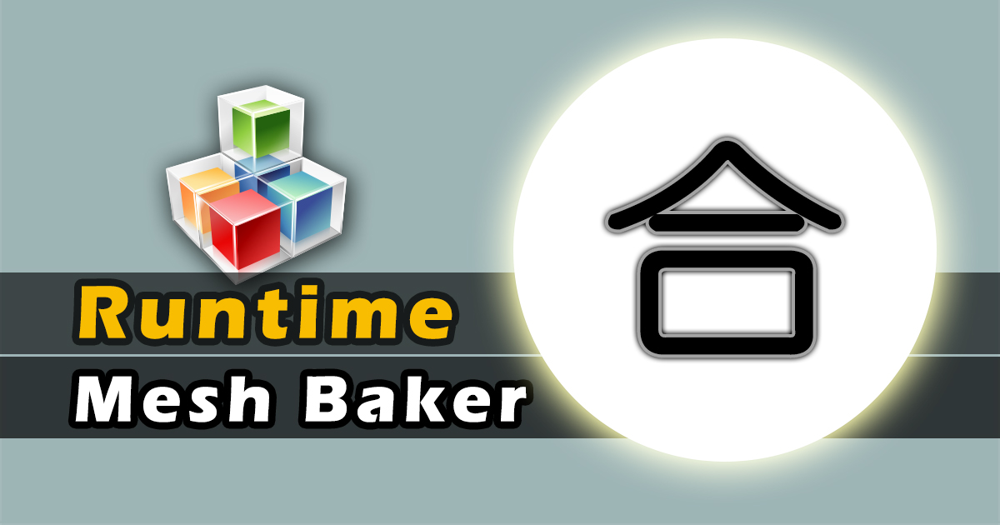
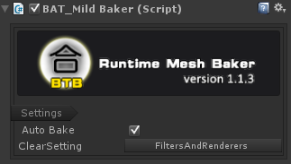
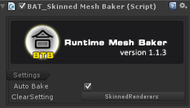

Runtime Mesh Baker v1.1.3

帮助你合并网格、材质和贴图，以减少DrawCall，提升你的Unity程序运行效率。
比Unity自有的静态和动态批处理要更加有效。
跟预先合并（非运行时合并）相比，不会产生冗余资源。
- 支持合并相同材质的skinned-mesh
- 用起来非常简单，一分钟即可学会
- 不挑剔，可以兼容你的任何shader和材质
- 最为高效的网格合并和优化方案
- 自动检测和合并，自动构建shader配置参数（方便识别特殊的贴图转换）
- 运行时合并，且非常快速的合并方案
- 自动垃圾回收处理，自动回收合并网格过程中产生的内存消耗
- 界面友好，支持历史记录操作，可以撤销与重做
警告: 此工具不能合并那些单个网格已经超越了64k个顶点的网格单元，因为这是Unity的网格合并上限。也就是说当你的有两个或者两个以上的网格加起来的顶点数不超越64k时，使用此工具才会获得性能优化（正常而言，对于手机游戏的网格顶点不会如此复杂，绝大部分情况下应该都存在优化空间）。
主页地址:http://www.lonelywalker.cn
开发者Email: mailoflonelywalker@qq.com
CSDN博客: http://blog.csdn.net/andrewfan
版本历史:
Version 1.1.3 2017.11.15
- 新功能: 优化MildBaker的合并效率
- 修复了bug: skinned-meshes合并时偶尔会产生的一个错误
- 修复了bug: MildBaker的子网格合并时偶尔会产生的一个错误
- 增加了示例: 为MildBaker增加一个合并示例，资源来自unitytank
Version 1.1.2 2017.9.18
- 新功能：支持相同材质的skinned-meshe合并
Version 1.1.1 2017.9.10
- 新功能：支持运行时合并
- 新功能：支持子网格和多材质合并
下载地址:
Runtime Mesh Baker Of AssetStore
使用方法:
-
准备好你要合并的游戏对象，把它们放在同一个树状层次结构中，当前需要合并在一起的的对象应该拥有一个共同的父节点。
-
选择这个父节点，选择以下菜单三者之一进行即可，点击运行，即可看到合并结果。在运行时将自动进行相应模式的合并（后续将解释不通模式之间的差别）。
- "Window/Rumtime Mesh Baker/Add MildBaker"
- "Window/Rumtime Mesh Baker/Add DeepBaker"
- "Window/Rumtime Mesh Baker/Add Skinned MeshBaker"
以上是手动添加组件的方式，如果你希望使用代码在你的游戏进行过程中调用合并功能，可以在您的工程添加以下调用代码:
gameObject.AddComponent<BAT_DeepBaker>();//for static objects , eg stones,trees
//or
gameObject.AddComponent<BAT_MildBaker>();//for static objects , eg stones,trees
//or
gameObject.AddComponent<BAT_SkinnedMeshBaker>();//for motion objects , eg characters
Mild Baking 轻度合并组件的参数解释:

轻度合并，将根据材质进行分组合并，即在当前树状层次结构中，搜索所有的材质，按照不同类型的材质进行分组，然后将相同材质的网格全部合并到同一个目标网格。合并过程中，使用原有的材质和贴图，不产生新的材质和贴图。
- Auto Bake: 是否自动合并，如果不勾选，则不会运行时自动合并，需要添加合并命令代码。
- ClearSetting: 合并完成后，将执行的自动清除功能，分为三种：
Nothing：代表不清除，由于合并出来的结果是位于新建立的GameObject下方，所以不清除的话，会产生额外的一份网格存在，除非你有特别的需要，一般不需要保留原先的MeshFilter和MeshRenderer组件，应该清除掉它们
MeshFilters：代表清除掉原来的MeshFilter组件，清除掉这个组件实际上已经清除掉了合并前的单元的渲染功能，但是又保留了MeshRenderer，除非你有特殊的需要，一般也不选择这个选项
FiltersAndRenderers：
代表清除合并前单元的MeshFilter和MeshRenderer组件，这是默认选项。
Deep Baking 深度合并组件的参数解释:

深度合并，将根据Shader进行分组合并，即在当前的树状层次结构中，搜索所有的材质，按照所有材质使用的不同类型的Shader进行分组，将所有使用相同Shader（它们可能使用不同的材质）的网格全部合并到一个目标网格，同时，将相应合并那些属于同一组的网格单元所使用的贴图。合并过程中，几乎总会产生新的材质和贴图（除非所有的被合并单元均使用了相同的材质）。
- Auto Bake: 与Mild Baking下的同名参数功能相同
- ClearSetting: 与Mild Baking下的同名参数功能相同
- Refresh button: 刷新配置参数，如果你的贴图或者材质发生过变化，则需要刷新以更新配置
- Shader: 分组的参考对象，当整个层次中使用了多个Shader时，将一一列出它们
- Materials: 那些使用同一个Shader的材质们
- UV configure- max texture size: 合并后可以产生的贴图最大尺寸.
- UV configure- texture items: 列出当前Shader中所有需要的贴图变量名称。它会自动区分出普通贴图与Normal贴图，因为这两种贴图在合并时使用的方法不同，如果识别出是normal贴图，normal选项会被打勾，一般来说，你不需要去改变它们，除非你的shader和特殊并且你知道某个贴图属性是否是normal贴图。
- References: 列出所有相关的贴图。如果条目的文字显示为红色，则说需要点一下下方的"Fix troubles"按钮，这个按钮的作用是把这些图片的导入属性中的可读写改为true，因为合并贴图贴图过程中需要有读取图片资源的过程。
Skinned-meshes Baking 皮肤网格合并组件的参数解释:

皮肤网格的合并，由于它本质上也是轻度合并，所以与Mild Baking的参数一致，只是本组件用于皮肤网格的合并，而Mild Baking和Deep Baking只能用于非皮肤网格的合并。
- Auto Bake: 与Mild Baking下的同名参数功能相同
- ClearSetting: 与Mild Baking下的同名参数功能相同
不同模式下的合并流程:
- 搜索目标父节点,检查所有的目标单元gameobject，收集它的MeshFilter 和 MeshRenderer信息。
- 整理所有的网格和材质信息，然后将目标单元分为不同类型的分组，轻度合并根据材质分组，深度合并根据Shader进行分组。
- 如果是深度合并，则需要构建新的材质，并且可能需要合并产生新的贴图。如果是轻度合并，则只使用原有的材质，不产生新的材质和贴图。
- 创建一个新的合并节点，开始网格的分组合并，如果本组网格的顶点书超越最大限制，则会将多余的网格合并到新的节点上。
- 为新合并的网格设置MeshFilters和MeshRenderers组件，它们使用当前分组的统一的材质。
- 执行清除操作，默认情况下，将移除被合并单元的MeshFilter和MeshRenderer属性。
三种合并模式之间的异同:
|
分组基础 |
合并贴图 |
合并网格 |
Draw call变化 |
多个子材质 |
合并目标 |
| Mild |
材质 |
不需要 |
需要 |
少 |
支持 |
静态物体 |
| Deep |
shader |
需要 |
需要 |
最少 |
支持 |
静态物体 |
| Skinned |
材质 |
不需要 |
需要 |
较少 |
不支持 |
可移动物体 |
故障排除
如果合并过程中发生了错误，检查以下条目：
- 使用深度合并的时候，确定你所有的GameObject没有被设置为static。
- 所有需要合并的贴图需要在导入属性中勾选readable选项，如果你使用的是深度合并的话。你可以点击组件上的"Fix troubles"按钮来快速完成这项设置。
- 如果你的材质有连续平铺的贴图，即在材质中的Tiling参数不为1的话,那么这类材质不能使用深度合并。你需要将这类目标移除出你的合并层次结构。
- 如果你使用BAT_SkinnedMeshBaker，那么注意那些目标skinned-mesh组件所位于的GameObject，它们的tranform变换信息须为0（相对于动画的Animation or Animator组件所在的对象），即局部坐标、缩放、旋转都为0,如果不是的话,可能会产生错误的骨骼动画。
视频教程:
将来的版本
- 处理连续平铺的问题，即tiling属性
- 支持光照贴图，即lightmapping